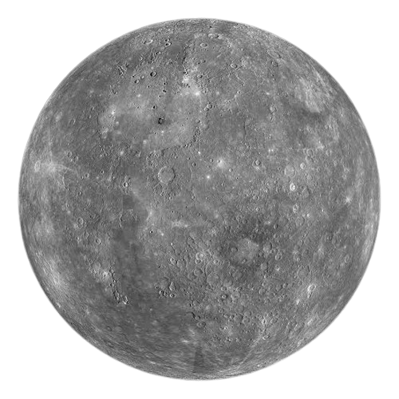
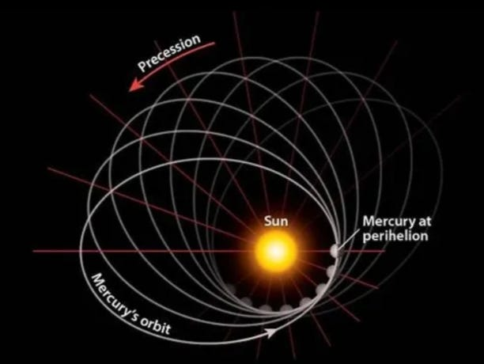

Mercury has the fastest and most eccentric orbit of all the planets. So eccentric, in fact, that it did not obey by Newton's laws of physics. Mercury's orbit has an unpexpected shift at the end which causes it to trace the following pattern around the sun over multiple orbits. For years it was unknown what caused this "wobble", with some even speculating that there was an unknown planet, named Vulcan, closer to the sun pulling on it. After Einstein published his model of gravity, it became known that the irregularities in Mercury's orbit are because of its proximity to the sun and the high gravity it experiences.
